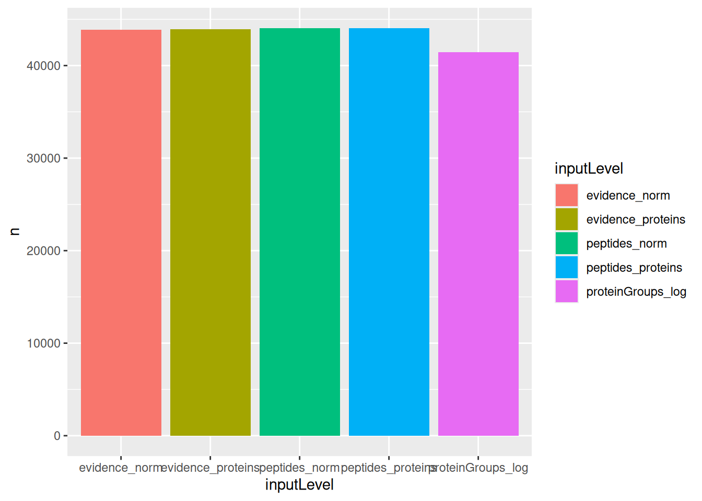
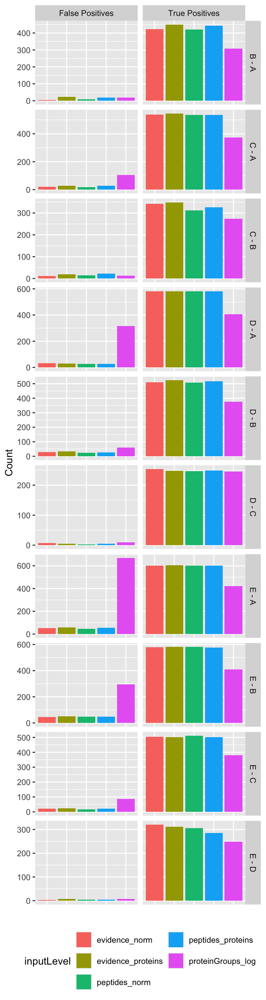
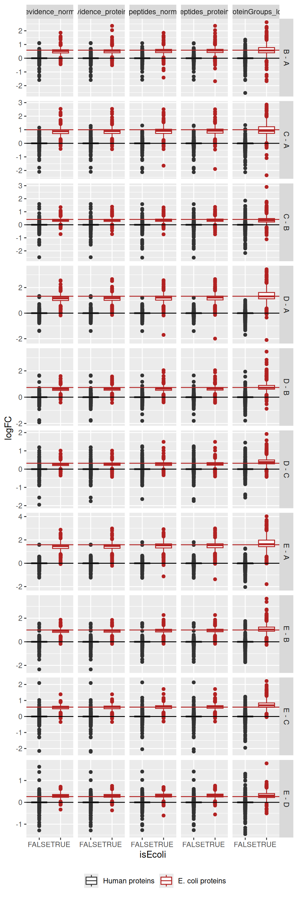
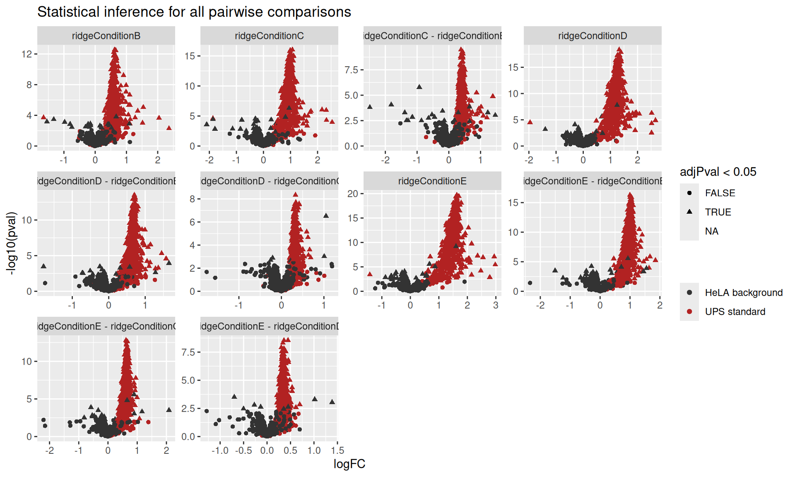
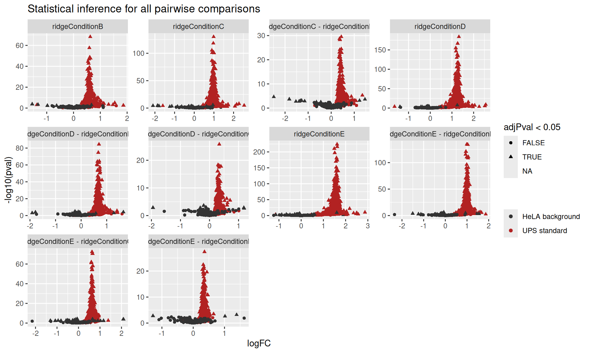

library("msqrob2")
library("dplyr")
library("tidyr")
library("data.table")
library("ggplot2")
library("patchwork")3 Benchmarking workflows
In the previous chapters we have seen three different approaches to model the data:
- Approach 1: start from a PSM-level table, compute the protein summaries and model the data at the protein level.
- Approach 2: start from a PSM-level table and model the ion-level data to obtain protein-level results.
- Approach 3: start from a peptide-level table, compute the protein summaries and model the data at the protein level.
There are further possible approaches to model the data:
- Approach 4: start from a peptide-level table and model the peptide-level data to obtain protein-level results.
- Approach 5: start from a protein-level table (generated by MaxQuant using maxLFQ) and model the protein-level data to obtain protein-level results.
In this chapter, we will attempt to understand whether these different approaches lead to difference in modelling performance. To explore these differences, we will conduct a benchmarking experiment using the E. coli spike-in experiment, containing ground truth information that will be used for an objective comparison of the workflows.
Important: the first sections of the chapter are meant for advanced users that are familiar with R scripting since benchmarking requires some degree of automation. However, for novice users interested in the key messages of the benchmarking and that want to implement the best practices, we refer to the take home message section for more accessible guidelines.
3.1 Load packages
We load the msqrob2 package, along with additional packages for data manipulation and visualisation.
TODO: move some functions from utils.R to msqrob2, eg msqrobCollect, pairwise contrasts
We also configure the parallelisation framework.
library("BiocParallel")
register(SerialParam())3.2 Data
We will reuse the data by (Shen et al. 2018) as in Chapter 1. The data were reanalysed using MaxQuant, which generates results at three levels: the evidence file containing the PSM table, the peptides file, and the protein group file.
3.2.1 Data files
We here retrieve those three data files.
TODO: put data on Zenodo or MsDataHub, and update code below
library("MsDataHub")
# myurl <- "https://github.com/statOmics/MSqRobSumPaper/raw/refs/heads/master/spikein/data/maxquant/peptides.zip"
# download.file(myurl,"data/sticker2020/peptides.zip", method = "curl", extra = "-L")
# unzip("data/sticker2020/peptides.zip", exdir = "data/sticker2020/")
# myurl <- "https://github.com/statOmics/MSqRobSumPaper/raw/refs/heads/master/spikein/data/maxquant/evidence.zip"
# download.file(myurl,"data/sticker2020/evidence.zip", method = "curl", extra = "-L")
# unzip("data/sticker2020/evidence.zip", exdir = "data/sticker2020/")
# myurl <- "https://github.com/statOmics/MSqRobSumPaper/raw/refs/heads/master/spikein/data/maxquant/proteinGroups.zip"
# download.file(myurl,"data/sticker2020/proteinGroups.zip", method = "curl", extra = "-L")
# unzip("data/sticker2020/proteinGroups.zip", exdir = "data/sticker2020/")
evidenceFile <- "data/sticker2020/evidence.txt"
peptidesFile <- "data/sticker2020/peptides.txt"
proteinGroupsFile <- "data/sticker2020/proteinGroups.txt"We also load the annotation table) that has been generated by the authors. Since the evidence, peptides and protein-groups tables all contain the same samples, the annotation table will be shared across the MaxQuant data tables.
annotFile <- "data/sticker2020/sticker2020_annotation.csv"
coldata <- read.csv(annotFile)We retrieve all the E. coli protein identifiers to later identify which proteins are known to be differentially abundant (E. coli proteins) or constant (human) across condition.
library("BiocFileCache")
bfc <- BiocFileCache()
ecoli <- bfcrpath(bfc, "https://raw.githubusercontent.com/statOmics/MSqRobSumPaper/refs/heads/master/spikein/data/fasta/ecoli_up000000625_7_06_2018.fasta")
ecoli <- readLines(ecoli)
ecoli <- ecoli[grepl("^>", ecoli)]
ecoli <- gsub(">sp\\|(.*)\\|.*", "\\1", ecoli)3.2.2 Convert to QFeatures
We combine each MaxQuant file with the annotation table into a QFeatures object.
- Load and convert the evidence table.
evidence <- fread(evidenceFile, check.names = TRUE)
coldata$runCol <- coldata$Raw.file
evidence <- readQFeatures(
evidence, colData = coldata, runCol = "Raw.file",
quantCols = "Intensity"
)- Load and convert the peptide table.
peptides <- read.delim(peptidesFile)
coldata$quantCols <- paste0("Intensity.", coldata$Sample)
peptides <- readQFeatures(
peptides, colData = coldata, name = "peptides",
fnames = "Sequence"
)- Load and convert the protein-groups table
proteinGroups <- read.delim(proteinGroupsFile)
proteinGroups <- readQFeatures(
proteinGroups, colData = coldata, name = "proteinGroups",
fnames = "Protein.IDs"
)3.3 Data preprocessing
To exclude differences in data processing between the different data files, we will create a common data processing workflow in a dedicated function1.
3.3.1 Preprocessing workflow
We will use the same QFeatures data preprocessing workflow as presented in the basic concepts chapter starting from the peptides table. However, we will account for the increased complexity in filtering when starting from PSM-level tables, where we need to exclude PSM mapping to multiple ions (as explained in the advanced concepts chapter). Conversely, the protein group table (containing LFQ normalised data) already underwent several data processing steps that will be ignored. We also need to provide the correct protein identifiers across data levels. We will use the Proteins column for the PSM-level and the peptide-level data, while we will use the Protein.IDs for the protein-group-level data.
Here is an overview of the data processing workflow:
- Encode missing values with
NA - Perform log2-transformation
- (Only for PSM-level data) Remove duplicated PSMs for each ion and join the data from different runs, effectively leading to ion-level data.
- (Only for protein-level data) Rename
Protein.IDstoProteinfor consistent protein identifier column name. - Filter features by removing failed protein inference and removing decoys and contaminants.
- Filter missing values, keeping features that are observed in at least 4 samples. This is the last step for the workflow starting from protein group data, because maxLFQ values are already normalised and summarised to protein values.
- Perform normalisation.
- Perform summarisation. The summarised values will only be used for protein-level modelling while the normalised data prior to normalisation will be used for ion-level and peptide-level modelling.
The workflow is implemented in a functions with one argument, object, which is the QFeatures we generated, either from the evidence file, the peptides file or the protein-groups file.
preprocessing_workflow <- function(object) {
## 1. Encode missing values
i <- names(object) ## store the input set names
object <- zeroIsNA(object, i)
## 2. Log transformation
logName <- paste0(i, "_log") ## generate the log set names
object <- logTransform(object, i, name = logName, base = 2)
## 3. PSM filtering (only for psm-level data)
if (length(i) > 1) {
for (ii in logName) {
rowdata <- rowData(object[[ii]])
rowdata$ionID <- paste0(rowdata$Sequence, rowdata$Charge)
rowdata$rowSums <- rowSums(assay(object[[ii]]), na.rm = TRUE)
rowdata <- data.frame(rowdata) |>
group_by(ionID) |>
mutate(psmRank = rank(-rowSums))
rowData(object[[ii]]) <- DataFrame(rowdata)
}
object <- filterFeatures(object, ~ psmRank == 1, keep = TRUE)
i <- "evidence"
joinName <- paste0(i, "_log")
object <- joinAssays(object, logName, joinName, "ionID")
logName <- joinName
}
## 4. Match protein identifiers across data levels
if (i == "proteinGroups") {
## We need to match the protein IDs in the evidence/peptide
## table with the protiein IDs in the protein group table
rowdata <- rbindRowData(object, names(object))
rowdata$Proteins <- rowdata$Protein.IDs
rowData(object) <- split(rowdata, rowdata$assay)
}
## 5. Feature filtering
object <- filterFeatures(
object, ~ Proteins != "" & ## Remove failed protein inference
!grepl(";", Proteins) & ## Remove protein groups
Reverse != "+" & ## Remove decoys
(Potential.contaminant != "+") ## Remove contaminants
)
## 6. Missing value filtering
n <- ncol(object[[logName]])
object <- filterNA(object, i = logName, pNA = (n - 4) / n)
## (The steps below are not for protein-group data)
if (i == "proteinGroups") return(object)
## 7. Normalisation
normName <- paste0(i, "_norm")
pseudoRef <- rowMeans(assay(object[[logName]]), na.rm = TRUE)
nfLog <- sweep(assay(object[[logName]]), MARGIN = 1, pseudoRef) |>
colMedians(na.rm = TRUE)
object <- sweep(
object, MARGIN = 2, STATS = nfLog, i = logName, name = normName
)
## 8. Summarisation
summName <- paste0(i, "_proteins")
aggregateFeatures(
object, i = normName, name = summName, fcol = "Proteins",
fun = MsCoreUtils::robustSummary
)
}3.3.2 Run the workflow
Now that we have defined a common data processing function, we apply to each input data level: the ion data, the peptide data and the protein-group data. We then combine all the data in a single QFeatures object.
evidence <- preprocessing_workflow(evidence)
peptides <- preprocessing_workflow(peptides)
proteinGroups <- preprocessing_workflow(proteinGroups)
spikein <- c(evidence, peptides, proteinGroups)3.4 Data modelling
Similarly to the data processing, we will use the same modelling workflow for each data level. For ion-level data (starting from the evidence file) and peptide-level data, we will both model the data before and after summarisation. In other words, we will model the data at the ion/peptide level (as described in the advanced chapter) and at the protein level (as described in the basics chapter).
3.4.1 Model definition
Depending on the input level (ion, peptide or protein), different models are required. The simplest model is the protein model where we account for the effect of Condition (spike-in amount group) using a fixed effect. For the peptide and the ion models, the data contains multiple peptides per proteins, and we expect that intensities from the same peptide are more similar than intensities from different peptides. Similarly, modelling multiple peptides per protein implies that we have multiple intensities per sample and hence that intensities from the same sample are more similar that intensities from different samples. The ion and peptide models therefore include a random effect for ion (ionID) and peptide (Sequence), and a random effect for sample (Sample). All three model definitions are stored in a list to streamline later access.
models <- list(
protein = ~ Condition,
peptide = ~ Condition + (1 | Sample) + (1 | Sequence),
ion = ~ Condition + (1 | Sample) + (1 | ionID)
)We will benchmark the performance of the modelling approaches by comparing all possible combination of 2 spike-in conditions2. All models assess the same comparisons of conditions, hence the same contrasts. We therefore build a contrast matrix that is shared across all models.
allContrasts <- createPairwiseContrasts(
models$protein, colData(spikein), var = "Condition", ridge = TRUE
)
L <- makeContrast(
allContrasts,
c("ridgeConditionB", "ridgeConditionC", "ridgeConditionD", "ridgeConditionE")
)3.4.2 Modelling workflow
We will use the same msqrob2 data modelling and statistical inference workflow as presented in the basic concepts chapter. However, for ion-level and peptide-level models, we will rely on mixed models that have been introduced in the advanced chapter, including the refitting of proteins for which there is only 1 feature (ion or peptide). We implement the workflow in a function that we will call for all modelling approaches. It has 5 arguments:
objectis the preprocessedQFeaturesobject containing the data to model.iis the name of the set to start (seenames(spikein)).modelis a formula defining the model to estimate.Lis the contrast matrix to perform hypothesis testing.modelLevelindicates whether the model should be fit at the"ion","peptide"or"protein"level.
modelling_workflow <- function(object, i, model, L, modelLevel) {
## 1. Estimate the model
if (modelLevel == "protein") {
object <- msqrob(
object, i = i, formula = model,
ridge = TRUE, robust = TRUE
)
} else {
## 1a. Estimate
object <- msqrobAggregate(
object, i = i, formula = model,
fcol = "Proteins", name = "msqrob",
robust = TRUE, ridge = TRUE
)
i <- "msqrob"
## 1b. Refit one-hit-wonders
counts <- aggcounts(object[["msqrob"]])
oneHitProteins <- rownames(counts)[rowMax(counts) == 1]
object <- msqrobRefit(
object, i = i, subset = oneHitProteins,
formula = ~ Condition,
fcol = "Proteins", name = "msqrob",
robust = TRUE, ridge = TRUE
)
}
## 2. Hypothesis testing
object <- hypothesisTest(object, i, contrast = L)
## 3. Collect the results
out <- msqrobCollect(object[[i]], L, combine = TRUE)
out
}3.4.3 Run the workflow
We will now run the above function for the different approaches. To do so, we create a table containing the main modelling settings3:
- Approach 1 (called
evidence_proteins): model the data from the evidence file using the protein level data. - Approach 2 (called
evidence_norm): model the data from the evidence file using the normalised ion data - Approach 3 (called
peptides_proteins): model the data from the peptides file using the protein level data. - Approach 4 (called
peptides_norm): model the data from the peptides file using the normalised peptide data. - Approach 5 (called
proteinGroups_log): model the data from the protein groups file using the protein level data.
(approaches <- data.frame(
inputLevel = c("evidence_proteins", "evidence_norm", "peptides_proteins", "peptides_norm", "proteinGroups_log"),
modelLevel = c("protein", "ion", "protein", "peptide", "protein")
)) inputLevel modelLevel
1 evidence_proteins protein
2 evidence_norm ion
3 peptides_proteins protein
4 peptides_norm peptide
5 proteinGroups_log proteinFor each row of this table, we retrieve the different arguments and run our data modelling workflow. Notice how every approach is run using the same code. Every apply iteration returns a table of statistical inference results for all pairwise comparisons. We combine all the tables in a single table for result exploration.
results <- apply(approaches, 1, function(x) {
out <- modelling_workflow(
spikein, i = x[["inputLevel"]], model = models[[x[["modelLevel"]]]],
L = L, modelLevel = x[["modelLevel"]]
)
out$inputLevel <- x[["inputLevel"]]
out$modelLevel <- x[["modelLevel"]]
out
})
results <- do.call(rbind, results)We also add whether each modelled protein is a E. Coli protein (known to be differentially abundant) or not. We also simplify the naming of the contrasts for visualisation.
results$isEcoli <- results$feature %in% ecoli
results$contrast <- gsub("ridgeCondition", "", results$contrast)
results$contrast <- gsub("^([B-E])$", "\\1 - A", results$contrast)3.5 Performance benchmark
We now can compare the performance of the different modelling approaches. We will compare the approaches based on 4 objectives criteria:
- The number of fitted proteins across conditions.
- The number of true positives and false positives at a 5% FDR threshold.
- The sensitivity against the rate of missidentification.
- The accuracy and pricision of the log2-fold change estimatione
3.5.1 Number of fits
We compare the number of proteins that could be estimated by each approach, where a model that fits more proteins is preferred. Note that the number of fits exceeds the number of measured proteins because we summed the fits over all comparisons.
group_by(results, inputLevel) |>
summarise(n = sum(!is.na(adjPval))) |>
ggplot() +
aes(x = inputLevel, y = n, fill = inputLevel) +
geom_bar(stat = "identity")
We can see that the approaches that fits least proteins is when starting from the protein-group file. However, all other four approaches can fit the same number of proteins.
3.5.2 TP and FP at 5% FDR
An approach that fits more proteins is preferred, provided that the additional fits lead to meaningful results. Because this data set contains ground truth information, we can assess whether the modelling approaches correctly prioritised the proteins given the known differential abundant proteins. We therefore benchmark the approaches by examining the number of reported proteins that are true positive (TP) (i.e., E. Coli proteins), and false positive (FP) (i.e., human proteins) considering a 5% false discovery rate (FDR) threshold, which is typically used. We will therefore first construct the table with TPs and FPs obtained from each data modelling approach for each comparison.
tpFpTable <- group_by(results, inputLevel, contrast) |>
filter(adjPval < 0.05) |>
summarise("True Positives" = sum(isEcoli),
"False Positives" = sum(!isEcoli)) |>
pivot_longer(cols = c("True Positives", "False Positives"))We then plot the table as a bar plot, facetting for every comparison.
ggplot(tpFpTable) +
aes(x = inputLevel,
y = value,
fill = inputLevel) +
geom_bar(stat = "identity") +
facet_grid(contrast ~ name, scales = "free") +
labs(x = "", y = "Count") +
theme(axis.text.x = element_blank(),
axis.ticks.x = element_blank(),
legend.position = "bottom") +
guides(fill = guide_legend(nrow = 3)) ## to avoid legend getting cropped
The plot clearly shows that starting from MaxQuant’s proteinGroups file leads to a severe decrease in performance as the number of TP is systematically lower compared to other approaches, while there is no dramatic difference with the number of FPs.
The four other approaches lead to comparable results. We could argue that for some specific comparisons (C-B, D-C, E-D) approaches starting from the evidence file recover slightly more TP without impact on the number of FP. Similarly modelling at the peptide/ion level leads to slight increase in performance compared to modelling at the protein level, but these difference are subtle.
3.5.3 TPR-FDP curves
Additionally, we construct true positive rate (TPR)-false discovery proportion (FDP) plots. TPR represents the fraction of truly DA proteins reported by the method, calculated as \(TPR = \frac{TP}{TP+FN}\), with FN false negatives (i.e., E. Coli proteins that were not flagged as differential abundant). FDP denotes the proportion of false positives among all proteins flagged as differential abundant, calculated as \(FDP = \frac{FP}{TP + FP}\).
So we first compute the FDP and TPR using the custom functions below:
computeFDP <- function(pval, tp) {
ord <- order(pval)
fdp <- cumsum(!tp[ord]) / 1:length(tp)
fdp[order(ord)]
}
computeTPR <- function(pval, tp, nTP = NULL) {
if (is.null(nTP)) nTP <- sum(tp)
ord <- order(pval)
tpr <- cumsum(tp[ord]) / nTP
tpr[order(ord)]
}Before computing these metrics, we first remove any failed inference4. This means that we are comparing the approach based on a set of proteins that is specific to each approach. However, proteins that are fit by some approaches but not by others may be harder to estimate and hence will decrease the overall performance. So, for a fair comparison, we also created a plot that compares the approaches when considering all the proteins measured in the data set (see the appendix section). Any failed inference for a DA protein will results in a FP. Similarly, we could also compare the approaches based on a common set of proteins that has been fit by all approaches (see the following appendix section).
We compute the TPR and FDP for each approach (given by inputLevel) and each pairwise spike-in comparison (given by contrast).
performance <- group_by(results, inputLevel, contrast) |>
na.exclude() |>
mutate(tpr = computeTPR(pval, isEcoli),
fdp = computeFDP(pval, isEcoli)) |>
arrange(fdp)We also highlight the observed FDP at a 5% FDR threshold. Since the FDR represent the expected FDP, i.e. the average of the FDPs obtained when the spike-in experiment were to be repeated an infinite number of times, an observed FDP that is very far away from 5% is indicative for a workflow that provides poor FDR control.
workPoints <- group_by(performance, inputLevel, contrast) |>
filter(adjPval < 0.05) |>
slice_max(adjPval) |>
filter(!duplicated(inputLevel))We can now generate the TPR-FDP curves. The best performing approach is characterised by the largest area under the curve. These curves provide the performance over a range of FDP values, but we limit the plot to the \([0, 0.2]\) range because researchers are rarely interest in the performance when the FDP exceeds 20%.
ggplot(performance) +
aes(y = fdp,
x = tpr,
colour = inputLevel) +
geom_line() +
geom_point(data = workPoints, size = 3) +
geom_hline(yintercept = 0.05, linetype = 2) +
facet_wrap(~ contrast) +
coord_flip(ylim = c(0, 0.2)) +
theme(legend.position = "bottom")
The results are in line with the previous bechmark criteria, that is starting from the proteinGroups file lead to a severe backlash on performance. The other approaches show comparable performance, although for challenging comparisons where the performance is generally low (C-B, D-C, E-D) we find a subtle increase in performance for ion/peptide level models.
Overal, we find that all approaches lead to a good FDR control. A notable exception is for challenging comparisons when starting from protein group data, where the performance is so low that FDR cannot be controlled. We also find that the other approaches tend to be conservative for the D-C and E-D comparisons.
The same results apply when considering all proteins in the data or when considering proteins estimated by all approaches, indicating that the conclusions do not depend on the set of proteins considered.
3.5.4 Fold change boxplots
Next to correctly prioritising the differentially abundant proteins, another object is to correctly estimate the log2-fold change between conditions. Since every condition contains E. Coli proteins that have been spiked in experimentally controlled amounts, we know the real log2-fold change between any two conditions. We will explore the model accuracy, i.e. how close the estimations are from the true value on average, and the model precision, i.e. how narrow the estimations are spread around the average estimation. In this data set, there are two target values. For E. Coli proteins, the expected value is the experimentally induced log2-fold change. For human proteins, the expected value is a log2-fold change of 0, as these proteins are experimentally known to be constant.
We explore the results using boxplots of the estimated log2-fold changes, but we first create a small table with the expected values.
realLogFC <- data.frame(
logFC = t(L) %*% lm(log2(Concentration) ~ Condition, colData(spikein))$coef[-1]
)
realLogFC$contrast <- gsub("ridgeCondition","",colnames(L))
realLogFC$contrast <- gsub("^([B-E])$", "\\1 - A", realLogFC$contrast)We can now create the boxplots with the estimated log2-fold changes, adding horizontal lines with the corresponding target values.
ggplot(results) +
aes(y = logFC,
x = isEcoli,
colour = isEcoli) +
geom_boxplot() +
scale_color_manual(
values = c("grey20", "firebrick"), name = "",
labels = c("Human proteins", "E. coli proteins")
) +
facet_grid(contrast ~ inputLevel, scales = "free") +
geom_hline(data = realLogFC, aes(yintercept = logFC),
colour = "firebrick") +
geom_hline(yintercept = 0) +
theme(legend.position = "bottom")
For all approaches, the boxplots are roughly centred on the expected value, indicating good model accuracy. Starting from MaxQuant’s protein-group data leads to wider boxplots, hence less stable estimation and hence decreased precision. The approach starting from the evidence file seems to provide somewhat more precise estimations as it shows less outliers compared to starting from the peptides file.
3.6 Take home messages
We found a striking drop in performance when starting from the protein-group data compared to the other approaches, suggesting that this approach leads to suboptimal results. We couldn’t find strong differences in performance between the remaining apporaches. For some comparisons, we found a slight increase in performance when starting from the evidence file compared to starting from the peptides file. Similarly, for some comparisons, we found a slight increase in performance when modelling data at the ion/peptide level compared to the protein level.
Processing the data from the evidence file only leads to one additional step compared to processing the data from the peptides file: we need to find a low-level feature definition that is shared across rus, which we here defined as the ion level (i.e. the combination of the peptide sequence and its charge). This additional step has little impact on the complexity of the workflow, hence we would advice to start from the evidence file. However, modelling the data at the ion/peptide level is more advanced than modelling at the protein level, as it requires the inclusion of random effects to account for the correlation structure within and between samples and within and between ions/peptides from the same protein. Moreover, the data modelling is performed at the ion/peptide level, but the statistical inference results are reported at the protein level, meaning that no direct protein summaries are available to explore and support the statistical outcome5. Therefore, we leave it to the user to decide whether the slight improvement in performance is worth the cost of more complex statistical analysis (Sticker et al. 2020).
Hence, this chapter showed how to perform benchmarking on different types of data input. Note that the same framework could be used to compare different search and quantification engines. Similarly, this framework can also be applied to compare different instruments or analytical protocols and setups. In the next chapter we demonstrate how to compare the impact of analysis steps for the same data.
In the remainder of this section, we provide a recap on how to perform a proteomics analysis from the evidence file6, either at the ion-level or at the protein level.
3.6.1 Preprocessing the evidence file
The first step is to read the data. Remember that we need two pieces of data, the sample annotation table and, in this case, the PSM table obtained after reading MaxQuant’s evidence file.
Here are the first 6 lines (first 6 samples) of the sample annotations, note we added runCol and quantCol that are required for the conversion to a QFeatures object.
coldata <- read.csv(annotFile)| Raw.file | Condition | Sample | Concentration |
|---|---|---|---|
| B03_03_150304_human_ecoli_C_3ul_3um_column_95_HCD_OT_2hrs_30B_9B | C | c1 | 6.0 |
| B03_08_150304_human_ecoli_C_3ul_3um_column_95_HCD_OT_2hrs_30B_9B | C | c2 | 6.0 |
| B03_18_150304_human_ecoli_C_3ul_3um_column_95_HCD_OT_2hrs_30B_9B | C | c3 | 6.0 |
| B03_19_150304_human_ecoli_B_3ul_3um_column_95_HCD_OT_2hrs_30B_9B | B | b1 | 4.5 |
| B03_07_150304_human_ecoli_D_3ul_3um_column_95_HCD_OT_2hrs_30B_9B | D | d1 | 7.5 |
| B03_14_150304_human_ecoli_D_3ul_3um_column_95_HCD_OT_2hrs_30B_9B | D | d2 | 7.5 |
Here are the first 6 lines (first 6 PSMs) of the PSM table. The table contains many columns, most containing information about the identified peptide and the quality of the spectrum matching.
evidence <- fread(evidenceFile, check.names = TRUE)| Sequence | Length | Modifications | Modified.sequence | Oxidation..M..Probabilities | Oxidation..M..Score.Diffs | Acetyl..Protein.N.term. | Oxidation..M. | Missed.cleavages | Proteins | Leading.proteins | Leading.razor.protein | Gene.names | Protein.names | Type | Raw.file | Experiment | MS.MS.m.z | Charge | m.z | Mass | Resolution | Uncalibrated…Calibrated.m.z..ppm. | Uncalibrated…Calibrated.m.z..Da. | Mass.error..ppm. | Mass.error..Da. | Uncalibrated.mass.error..ppm. | Uncalibrated.mass.error..Da. | Max.intensity.m.z.0 | Retention.time | Retention.length | Calibrated.retention.time | Calibrated.retention.time.start | Calibrated.retention.time.finish | Retention.time.calibration | Match.time.difference | Match.m.z.difference | Match.q.value | Match.score | Number.of.data.points | Number.of.scans | Number.of.isotopic.peaks | PIF | Fraction.of.total.spectrum | Base.peak.fraction | PEP | MS.MS.count | MS.MS.scan.number | Score | Delta.score | Combinatorics | Intensity | Reverse | Potential.contaminant | id | Protein.group.IDs | Peptide.ID | Mod..peptide.ID | MS.MS.IDs | Best.MS.MS | AIF.MS.MS.IDs | Oxidation..M..site.IDs |
|---|---|---|---|---|---|---|---|---|---|---|---|---|---|---|---|---|---|---|---|---|---|---|---|---|---|---|---|---|---|---|---|---|---|---|---|---|---|---|---|---|---|---|---|---|---|---|---|---|---|---|---|---|---|---|---|---|---|---|---|---|---|
| AAAAAAAAAAAAAAAGAGAGAK | 22 | Unmodified | AAAAAAAAAAAAAAAGAGAGAK | 0 | 0 | 0 | P55011 | P55011 | P55011 | SLC12A2 | Solute carrier family 12 member 2 | MULTI-SECPEP | B03_03_150304_human_ecoli_C_3ul_3um_column_95_HCD_OT_2hrs_30B_9B | c1 | 532.9854 | 3 | 532.9533 | 1595.838 | 94394.69 | -0.5225600 | -0.0002785 | 0.84218 | 0.0004488 | 0.31962 | 0.0001703 | 532.9553 | 76.475 | 0.19265 | 76.426 | 76.307 | 76.500 | -0.049773 | NA | NA | NA | NA | 24 | 11 | 3 | 0 | 0 | 0 | 0.0013949 | 1 | 31302 | 46.133 | 33.507 | 1 | 4268500 | 0 | 2115 | 0 | 0 | 0 | 0 | NA | |||||
| AAAAAAAAAAAAAAAGAGAGAK | 22 | Unmodified | AAAAAAAAAAAAAAAGAGAGAK | 0 | 0 | 0 | P55011 | P55011 | P55011 | SLC12A2 | Solute carrier family 12 member 2 | MULTI-SECPEP | B03_08_150304_human_ecoli_C_3ul_3um_column_95_HCD_OT_2hrs_30B_9B | c2 | 532.9863 | 3 | 532.9533 | 1595.838 | 89387.45 | 0.0021322 | 0.0000011 | -0.25348 | -0.0001351 | -0.25135 | -0.0001340 | 533.2871 | 76.225 | 0.16901 | 76.426 | 76.314 | 76.483 | 0.200350 | NA | NA | NA | NA | 13 | 8 | 2 | 0 | 0 | 0 | 0.0069352 | 1 | 31103 | 38.377 | 32.662 | 1 | 7099400 | 1 | 2115 | 0 | 0 | 1 | 1 | NA | |||||
| AAAAAAAAAAAAAAAGAGAGAK | 22 | Unmodified | AAAAAAAAAAAAAAAGAGAGAK | 0 | 0 | 0 | P55011 | P55011 | P55011 | SLC12A2 | Solute carrier family 12 member 2 | MSMS | B03_18_150304_human_ecoli_C_3ul_3um_column_95_HCD_OT_2hrs_30B_9B | c4 | 798.9761 | 2 | 798.9263 | 1595.838 | NaN | NaN | NaN | NaN | NaN | NaN | NaN | NaN | 76.225 | 1.00000 | 76.639 | 76.139 | 77.139 | 0.413920 | NA | NA | NA | NA | NA | NA | NA | 0 | 0 | 0 | 0.0000000 | 1 | 31830 | 98.407 | 82.183 | 1 | NA | 2 | 2115 | 0 | 0 | 2 | 2 | NA | |||||
| AAAAAAAAAAAAAAAGAGAGAK | 22 | Unmodified | AAAAAAAAAAAAAAAGAGAGAK | 0 | 0 | 0 | P55011 | P55011 | P55011 | SLC12A2 | Solute carrier family 12 member 2 | MSMS | B03_19_150304_human_ecoli_B_3ul_3um_column_95_HCD_OT_2hrs_30B_9B | b4 | 798.9767 | 2 | 798.9263 | 1595.838 | NaN | NaN | NaN | NaN | NaN | NaN | NaN | NaN | 75.981 | 1.00000 | 76.733 | 76.233 | 77.233 | 0.752060 | NA | NA | NA | NA | NA | NA | NA | 0 | 0 | 0 | 0.0000000 | 1 | 31810 | 71.241 | 53.805 | 1 | NA | 3 | 2115 | 0 | 0 | 3 | 3 | NA | |||||
| AAAAAAAAAAAAAAAGAGAGAK | 22 | Unmodified | AAAAAAAAAAAAAAAGAGAGAK | 0 | 0 | 0 | P55011 | P55011 | P55011 | SLC12A2 | Solute carrier family 12 member 2 | MULTI-MATCH | B03_07_150304_human_ecoli_D_3ul_3um_column_95_HCD_OT_2hrs_30B_9B | d2 | NA | 3 | 532.9533 | 1595.838 | 83252.61 | -0.4043600 | -0.0002155 | -0.31288 | -0.0001667 | -0.71725 | -0.0003823 | 532.9532 | 76.332 | 0.11982 | 76.533 | 76.433 | 76.553 | 0.200930 | -0.016489 | -0.0001398 | NaN | 37.285 | 10 | 8 | 2 | NaN | NaN | NaN | NaN | 0 | NA | NaN | NaN | 0 | 8563700 | 4 | 2115 | 0 | 0 | NA | NA | ||||||
| AAAAAAAAAAAAAAAGAGAGAK | 22 | Unmodified | AAAAAAAAAAAAAAAGAGAGAK | 0 | 0 | 0 | P55011 | P55011 | P55011 | SLC12A2 | Solute carrier family 12 member 2 | MULTI-MATCH | B03_14_150304_human_ecoli_D_3ul_3um_column_95_HCD_OT_2hrs_30B_9B | d3 | NA | 3 | 532.9533 | 1595.838 | 98783.58 | -0.3048300 | -0.0001625 | -0.31827 | -0.0001696 | -0.62310 | -0.0003321 | 532.9531 | 76.046 | 0.10846 | 76.498 | 76.403 | 76.511 | 0.451640 | -0.051605 | -0.0001484 | NaN | 37.285 | 7 | 5 | 2 | NaN | NaN | NaN | NaN | 0 | NA | NaN | NaN | 0 | 6597000 | 5 | 2115 | 0 | 0 | NA | NA |
Note that Intensity column contains the quantitative values and the Raw.file column indicates in which run the sample was acquired. We use the latter to link the sample annotation with the PSM table. We therefore need to add runCol to the sample annotation that will serve as the linker. We can then convert the tables to a QFeatures object.
coldata$runCol <- coldata$Raw.file
(evidence <- readQFeatures(
evidence, colData = coldata, runCol = "Raw.file",
quantCols = "Intensity"
))An instance of class QFeatures (type: bulk) with 20 sets:
[1] B03_02_150304_human_ecoli_B_3ul_3um_column_95_HCD_OT_2hrs_30B_9B: SummarizedExperiment with 40057 rows and 1 columns
[2] B03_03_150304_human_ecoli_C_3ul_3um_column_95_HCD_OT_2hrs_30B_9B: SummarizedExperiment with 41266 rows and 1 columns
[3] B03_04_150304_human_ecoli_D_3ul_3um_column_95_HCD_OT_2hrs_30B_9B: SummarizedExperiment with 41396 rows and 1 columns
...
[18] B03_19_150304_human_ecoli_B_3ul_3um_column_95_HCD_OT_2hrs_30B_9B: SummarizedExperiment with 39388 rows and 1 columns
[19] B03_20_150304_human_ecoli_A_3ul_3um_column_95_HCD_OT_2hrs_30B_9B: SummarizedExperiment with 39000 rows and 1 columns
[20] B03_21_150304_human_ecoli_A_3ul_3um_column_95_HCD_OT_2hrs_30B_9B: SummarizedExperiment with 38783 rows and 1 columns Note that the data from every run is contained in a separate set. We cannot yet join the sets together since we don’t have a specific feature identifier, yet7.
- Encoding missing values as zeros.
evidence <- zeroIsNA(evidence, names(evidence))- Log2 transforming
inputNames <- names(evidence)
logNames <- paste0(inputNames, "_log")
evidence <- logTransform(evidence, inputNames, name = logNames, base = 2)- Keeping only the most intense PSM per ion (see here for a step-by-step explanation of the code). Upon this filtering every feature is unique to a ion identifier (peptide sequence + charge), and we hence can join sets using that identifier.
for (i in logNames) {
rowdata <- rowData(evidence[[i]])
rowdata$ionID <- paste0(rowdata$Sequence, rowdata$Charge)
rowdata$value <- assay(evidence[[i]])[, 1]
rowdata <- data.frame(rowdata) |>
group_by(ionID) |>
mutate(psmRank = rank(-value))
rowData(evidence[[i]])$psmRank <- rowdata$psmRank
rowData(evidence[[i]])$ionID <- rowdata$ionID
}
evidence <- filterFeatures(evidence, ~ psmRank == 1, keep = TRUE)
evidence <- joinAssays(evidence, logNames, "ions_log", "ionID")- Feature filtering
evidence <- filterFeatures(
evidence, ~ Proteins != "" & ## Remove failed protein inference
!grepl(";", Proteins) & ## Remove protein groups
Reverse != "+" & ## Remove decoys
(Potential.contaminant != "+") ## Remove contaminants
)- Missing value filtering
n <- ncol(evidence[["ions_log"]])
evidence <- filterNA(evidence, i = "ions_log", pNA = (n - 4) / n)- Normalisation
pseudoRef <- rowMeans(assay(evidence[["ions_log"]]), na.rm = TRUE)
nfLog <- sweep(assay(evidence[["ions_log"]]), MARGIN = 1, pseudoRef) |>
colMedians(na.rm = TRUE)
evidence <- sweep(
evidence, MARGIN = 2, STATS = nfLog,
i = "ions_log", name = "ions_norm"
)- Summarisation
evidence <- aggregateFeatures(
evidence, i = "ions_norm", name = "proteins", fcol = "Proteins",
fun = MsCoreUtils::robustSummary
)3.6.2 Modelling the preprocessed data
We can model the data either at the ion level or at the protein level. Regardless of the modelling approach, we can readily generate the contrast matrix to assess all pairwise comparisons between the experimental spike-in conditions.
allContrasts <- createPairwiseContrasts(
~ Condition, colData(evidence), var = "Condition", ridge = TRUE
)
L <- makeContrast(
allContrasts,
c("ridgeConditionB", "ridgeConditionC", "ridgeConditionD", "ridgeConditionE")
)Modelling at the protein-level
We first need to define the model we want to estimate, which descirbes the sources of variation in the data. For the protein-level data, the only potential source of variation identified from the experiment is the spike-in condition of interest. We model it as a fixed effect.
modelProtein <- ~ ConditionThen, we estimate the model.
evidence <- msqrob(
evidence, i = "proteins", formula = modelProtein,
ridge = TRUE, robust = TRUE
)And we perform statistical inference on the estimated model parameters.
evidence <- hypothesisTest(evidence, "proteins", contrast = L)
resultsProtein <- msqrobCollect(evidence[["proteins"]], L, combine = TRUE)
resultsProtein$isEcoli <- resultsProtein$feature %in% ecoliNote that this workflows closely follows the workflow described in the basics chapter. We can report the result using a volcano plot, for instance.
ggplot(resultsProtein) +
aes(x = logFC,
y = -log10(pval),
shape = adjPval < 0.05,
color = isEcoli) +
geom_point() +
scale_color_manual(
values = c("grey20", "firebrick"), name = "",
labels = c("HeLA background", "UPS standard")
) +
facet_wrap(~ contrast, scales = "free") +
ggtitle("Statistical inference for all pairwise comparisons") 
Modelling at the ion-level
The model definition for the ion-level data is more ellaborate than for the protein-level data. We need to account for the fact that intensities within the same sample are more correlated than intensities across samples. Similarly, we need to account for the fact that intensities for the same ion will be more similar than intensities between ions of the same proteins. On top of the condition effect that we model as a fixed effect, we will account for these sample and ion effects using a random effect.
modelIon <- ~ Condition + (1 | Sample) + (1 | ionID)Then, we estimate the model using msqrobAggregate() instead of msqrob().
evidence <- msqrobAggregate(
evidence, i = "ions_norm", formula = modelIon,
fcol = "Proteins", name = "msqrob",
robust = TRUE, ridge = TRUE
)Because some proteins are only measured by a single ion, its corresponding sample and ion effects cannot be estimated and hence the model for those proteins will not be estimated. We therefore refit a simplified model for those proteins using the refitting workflow described in the advanced chapter.
counts <- aggcounts(evidence[["msqrob"]])
oneHitProteins <- rownames(counts)[rowMax(counts) == 1]
evidence <- msqrobRefit(
evidence, i = "ions_norm", subset = oneHitProteins,
formula = ~ Condition,
fcol = "Proteins", name = "msqrob",
robust = TRUE, ridge = TRUE
)And we perform statistical inference on the estimated model parameters (same as above).
evidence <- hypothesisTest(evidence, "msqrob", contrast = L)
resultsIon <- msqrobCollect(evidence[["msqrob"]], L, combine = TRUE)
resultsIon$isEcoli <- resultsIon$feature %in% ecoliWe can report the result using a volcano plot, for instance.
ggplot(resultsIon) +
aes(x = logFC,
y = -log10(pval),
shape = adjPval < 0.05,
color = isEcoli) +
geom_point() +
scale_color_manual(
values = c("grey20", "firebrick"), name = "",
labels = c("HeLA background", "UPS standard")
) +
facet_wrap(~ contrast, scales = "free") +
ggtitle("Statistical inference for all pairwise comparisons") 
3.7 Appendix
This section provides a complement to the TPR-FDR curves
3.7.1 TPR-FDP curves using all proteins in the data
This code is almost the same as for the main plot, except we removed the na.exclude() statement. This means that all proteins, even if not estimated, are included. The missing p-values will be ranked at the end (as if they were estimated at 1), meaning they will be accounted for when computing the TPR and FDP. This will inevitably lead to a decrease in the maximum TPR, especially for approaches that estimated less proteins.
performance_all <- group_by(results, inputLevel, contrast) |>
mutate(tpr = computeTPR(pval, isEcoli),
fdp = computeFDP(pval, isEcoli)) |>
arrange(fdp)
workPoints <- group_by(performance_all, inputLevel, contrast) |>
filter(adjPval < 0.05) |>
slice_max(adjPval) |>
filter(!duplicated(inputLevel))
ggplot(performance_all) +
aes(y = fdp,
x = tpr,
colour = inputLevel) +
geom_line() +
geom_point(data = workPoints, size = 3) +
geom_hline(yintercept = 0.05, linetype = 2) +
facet_wrap(~ contrast) +
coord_flip(ylim = c(0, 0.2)) +
theme(legend.position = "bottom") +
ggtitle("TPR-FDP curves using all proteins in the data")
3.7.2 TPR-FDP curves using only the proteins fit by all approaches
The code is almost the same as for the main plot, except we add a filtering step where we require, for each comparison, that p-values are not missing for all 5 approaches, effectively focusing on the set of proteins that have been estimated by all approaches.
performance_common <- group_by(results, feature, contrast) |>
filter(!is.na(adjPval),
n() == 5) |>
group_by(inputLevel, contrast) |>
mutate(tpr = computeTPR(pval, isEcoli),
fdp = computeFDP(pval, isEcoli)) |>
arrange(fdp)
workPoints <- group_by(performance_common, inputLevel, contrast) |>
filter(adjPval < 0.05) |>
slice_max(adjPval) |>
filter(!duplicated(inputLevel))
ggplot(performance_common) +
aes(y = fdp,
x = tpr,
colour = inputLevel) +
geom_line() +
geom_point(data = workPoints, size = 3) +
geom_hline(yintercept = 0.05, linetype = 2) +
facet_wrap(~ contrast) +
coord_flip(ylim = c(0, 0.2)) +
theme(legend.position = "bottom") +
ggtitle("TPR-FDP curves using only the proteins fit by all approaches")
Another option would be to copy-paste the workflow code for every approach, but we refrain from doing so as this can lead to incoherent code when the workflow needs to be changed. This is a common malpractice that reduces code maintainability.↩︎
There are 5 conditions, so 10 unique pairwise combinations.↩︎
Note the approach names match some of the sets in the
QFeaturesobject.↩︎When statistical inference fails for a protein,
msqrob2will fill the (adjusted) p-value and log2-fold change with missing values. So excluding NAs will ignore any failed inference.↩︎Although these protein data are indirectly generated using a summarisation approach (c.f.
msqrobAggregate()).↩︎We build on the concepts introduced in the basic concepts chapter and the advanced concepts chapter↩︎
A PSM is generated from a spectrum, which is specific to each run and there is not unambiguous way to link a spectrum across runs↩︎